×
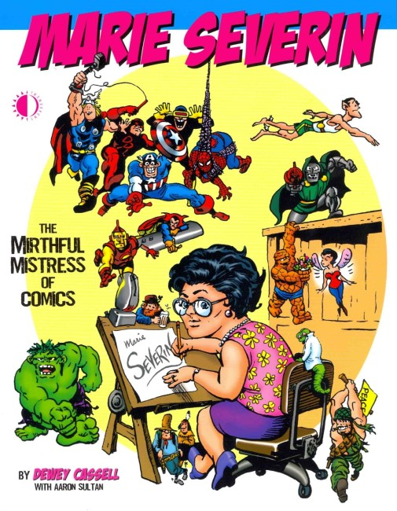
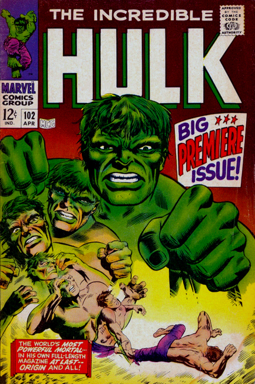
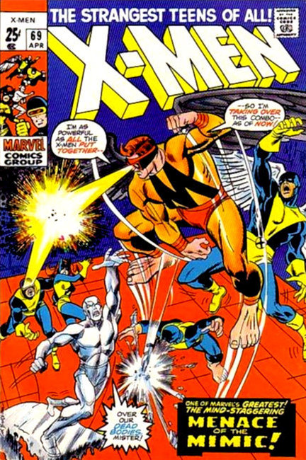
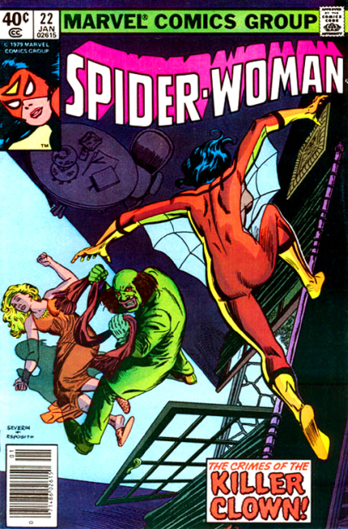
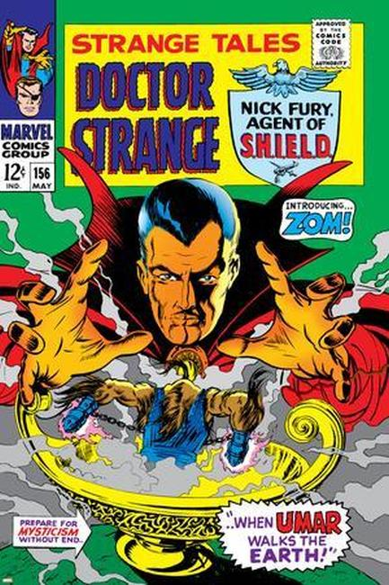
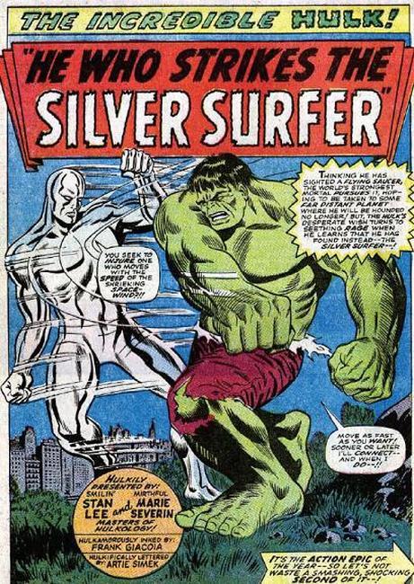
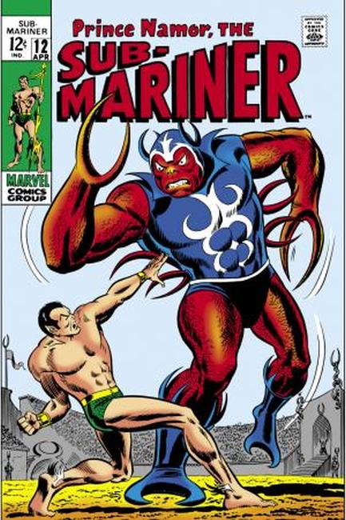
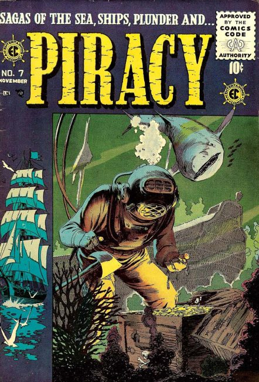
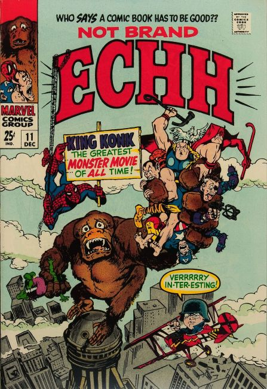
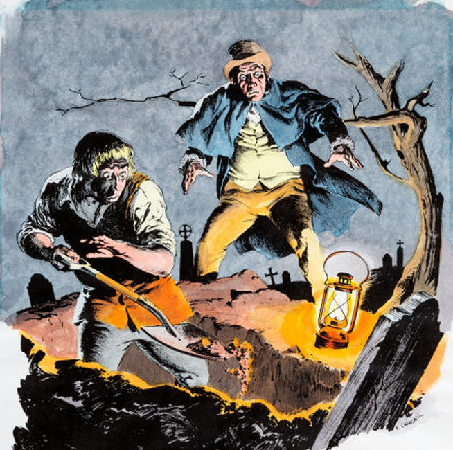
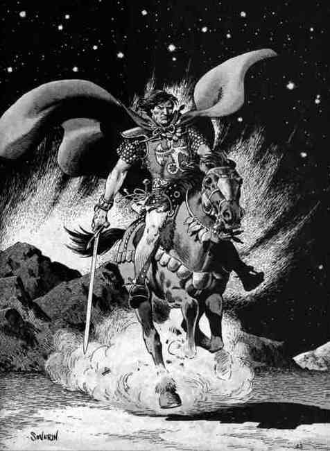
❮
❯
Marie Severin (August 21, 1929 – August 29, 2018) was an American comics artist and colorist best known for her work for Marvel Comics and the 1950s' EC Comics. She was inducted into the Will Eisner Comics Hall of Fame in 2001.
Atlas Comics
Astonishing #54 (artist) (1956)
Tales of Justice #55 (artist) (1957)
Uncanny Tales #54 (artist) (1957)
World of Mystery #3, 7 (artist) (1956–1957)
Claypool Comics
Elvira: Mistress of the Dark #144 (inker) (2005)
Soulsearchers and Company #31 (penciller), #43 (inker) (1998–2000)
DC Comics
9-11: The World's Finest Comic Book Writers & Artists Tell Stories to Remember, Volume Two (artist/colorist) (2002)
Batman Black and White, vol. 2, HC (artist, among others) (2002)
Bizarro Comics HC (inker/colorist) (2001)
Fanboy #4 (artist) (1999)
L.A.W. (Living Assault Weapons) #6 (colorist) (2000)
Looney Tunes #100 (artist) (2003)
Pinky and the Brain #27 (colorist) (1998)
Supergirl Plus #1 (colorist) (1997)
Superman Adventures #1–12, 14, 22–38, 40–66 (colorist) (1996–2002)
Paradox Press
The Big Book of... Volume 9, 11–14, 17 (artist) (1997–2000)
Dark Horse Comics
Harlan Ellison's Dream Corridor Quarterly #1 (colorist) (1996)
Michael Chabon Presents the Amazing Adventures of the Escapist #5 (artist) (2005)
EC Comics
A Moon, a Girl... Romance #9 (colorist) (1949)
Aces High #1–5 (colorist) (1955)
Crime SuspenStories #17–20, 22–27 (artist/colorist) (1953–1955)
Extra! #1–5 (colorist) (1955)
Frontline Combat #5 (colorist) (1952)
The Haunt of Fear #1, 14–17 (colorist) (1950–1953)
Impact #1–5 (colorist) (1955)
Incredible Science Fiction #30–33 (colorist) (1955–1956)
Piracy #1–7 (colorist) (1954–1955)
Shock SuspenStories #6, 9–14, 18 (artist/colorist) (1952–1954)
Valor #2–3 (colorist) (1955)
The Vault of Horror #16, 34 (colorist) (1950–1954)
Weird Fantasy #6–12, 14–16 (colorist) (1951–1952)
Weird Science-Fantasy #24, 27, 29 (artist/colorist) (1954–1955)
Gladstone
Mickey Mouse #219 (colorist) (1986)
GT Labs
Dignifying Science OGN (penciller) (1999)
Marvel Comics
2001: A Space Odyssey Marvel Treasury Special #1 (colorist) (1976)
2099 Unlimited #1, 3 (colorist), #6 (artist/colorist) (1993–1994)
Alf #1–18, 20–38, 40–50, Annual #1–3, Holiday Special #1–2, Spring Special #1 (inker/colorist) (1988–1992)
Amazing Adventures #16 (penciller) (1973)
Amazing High Adventure #1, 3–4 (colorist) (1984–1986)
The Amazing Spider-Man #186 (colorist), Annual #5 (writer/penciller) (1968–1978)
Astonishing Tales #20 (penciller/colorist) (1973)
The A-Team #1 (penciller/colorist) (1984)
Battlestar Galactica #3 (colorist) (1979)
Bill & Ted's Bogus Journey #1 (inker) (1991)
Bill & Ted's Excellent Comic Book #4–12 (inker) (1992)
Captain America #440 (inker) (1995)
Captain Britain #1–2, 4–7, 10, 15–16 (colorist) (1976–1977)
Casper #1 (inker) (1995)
Cat #1–2 (penciller/colorist) (1972–1973)
Chamber of Darkness #2 (penciller) (1969)
Conan the Barbarian #10 (penciller), #69, 72 (colorist) (1971–1977)
Conan the King #20 (inker) (1984)
Conan the Reaver GN (colorist) (1987)
Coneheads #1–4 (inker) (1994)
Crazy Magazine #11, 69, 75, 78–79 (artist) (1975–1981)
Creatures on the Loose #10 (colorist), #14 (penciller) (1971)
Damage Control vol. 2 #4 (inker) (1990)
The Deep #1 (colorist) (1977)
Defenders #53 (colorist), #127 (writer/artist) (1977–1984)
Doc Savage #4 (penciller) (1976)
Doctor Strange vol. 2 #20, 31 (colorist) (1976–1978)
Doctor Strange, Sorcerer Supreme #78–79 (penciller) (1995)
Droids #1, 6 (colorist) (1986–1987)
Epic Battles of the Civil War Volume 1–4 (colorist) (1998)
Epic Illustrated #9, 11, 13 (inker), #12 (letterer), #15–20 (colorist) (1981–1983)
Ewoks #1–2 (inker/colorist) (1985)
Fallen Angels #3 (penciller) (1977)
Fantastic Four #177 (colorist) (1976)
Fraggle Rock #1–8 (artist/colorist) (1985–1986)
Francis, Brother of the Universe #1 (inker/colorist) (1980)
G.I. Joe: A Real American Hero #28 (penciller) (1984)
Giant-Size Chillers #3 (artist) (1975)
Heathcliff #53 (artist) (1990)
Heroes for Hope Starring the X-Men #1 (colorist) (1985)
Howard the Duck #7 (colorist) (1976)
Hugga Bunch #2 (colorist) (1986)
The Hulk #15 (colorist) (1979)
Human Fly #1 (colorist) (1977)
The Incredible Hulk #102–105, Annual #1 (penciller), #190, 354, 358–367 (inker) (1968–1990)
Invaders #14 (colorist) (1977)
Iron Fist #13 (colorist) (1977)
Iron Man #82–83, 85 (inker), #108 (colorist) (1976–1978)
Kickers, Inc. #2 (colorist) (1986)
Kid 'n Play #6 (inker) (1992)
King Arthur and the Knights of Justice #1–3 (inker) (1993–1994)
Kull the Conqueror #2–10 (penciller) (1971–1973)
Kull the Conqueror vol. 2 #1, 7, 9 (colorist) (1982–1985)
Kull the Destroyer #18, 20–21 (colorist) (1976–1977)
The Life of Pope John Paul II #1 (colorist) (1983)
Logan's Run #1, 3 (colorist) (1977)
Marvel Comics Super Special #1–3, 9, 15, 22–23 (colorist), #20 (penciller/colorist) (1978–1982)
Marvel Holiday Special #3 (artist) (1994)
Marvel Premiere #50 (colorist) (1979)
Marvel Spotlight #12 (colorist) (1973)
Marvel Super-Heroes vol. 2 #12 (penciller) (1993)
Marvel Team-Up #74 (inker/colorist) (1978)
Marvel Treasury Edition #12, 24 (colorist) (1976–1980)
Marvel Two-in-One #23 (penciller) (1977)
Midnight Sons Unlimited #6–7 (artist/colorist) (1994)
Mighty Mouse #1–10 (inker) (1990–1991)
Misty #1–3 (colorist) (1985–1986)
Monsters on the Prowl #16 (inker) (1972)
Moon Knight Special #1 (artist/colorist) (1992)
Ms. Marvel #1 (colorist) (1977)
Muppet Babies #1, 3–13, 15–16 (artist/colorist) (1985–1987)
New Warriors Annual #1 (inker) (1991)
Not Brand Echh #1–9, 11–13 (artist) (1967)
Nova #6, 11 (colorist) (1977)
Official Handbook of the Marvel Universe #3, 14 (penciller) (1983–1984)
Pizzazz #5, 9–13, 15 (Star Wars comic) (colorist) (1978)
Power Man #35 (penciller) (1976)
Power Man and Iron Fist #60 (penciller/colorist) (1979)
Psi-Force #3 (colorist) (1987)
Punisher 2099 #7–8, 12 (colorist) (1993–1994)
Rawhide Kid, vol. 2, #1 (colorist) (1985)
Red Sonja vol. 3 #8 (inker) (1985)
The Ren & Stimpy Show #9 (inker) (1993)
Royal Roy #1 (colorist) (1985)
Sergio Massacres Marvel #1 (inker) (1996)
The Smurfs #1 (inker) (1982)
The Spectacular Spider-Man #8 (colorist), #45, 47–48, 51, 54, Annual #3, 11 (artist) (1977–1991)
Spider-Man and the Dallas Cowboys Sunday supplement (writer/penciller) (1983)
Spider-Man: Christmas in Dallas promotional one-shot (colorist) (1983)
Spoof #1–5 (1970–1973)
Star Team promotional one-shot (colorist) (1977)
Star Trek #13 (inker) (1981)
Star Wars #1, 17 (colorist) (1977–1978)
Strange Tales #153–160 (artist) (1967)
Sub-Mariner #9, 12–19, 21–23, 44–45 (penciller/colorist) (1969–1972)
Supernatural Thrillers #1 (penciller) (1972)
Tales of Suspense #73 (colorist) (1966)
Tales to Astonish #92–101 (penciller) (1967–1968)
Tarzan #1–2 (colorist) (1977)
Thor #253, 287 (colorist), 306, 308 (inker) (1976–1981)
Thundercats #13–16 (colorist) (1987)
The Tomb of Dracula #58, 60 (colorist) (1977)
Toxic Crusaders #1, 3, 6–7 (inker) (1992)
Transformers: Generation 2 #1–4 (inker) (1993–1994)
Web of Spider-Man #27 (colorist) (1987)
What If ... ? vol. 2 #17 (inker) (1990)
What The--?! #1, 16, 18, 21, 25–26 (artist/inker/colorist) (1988–1993)